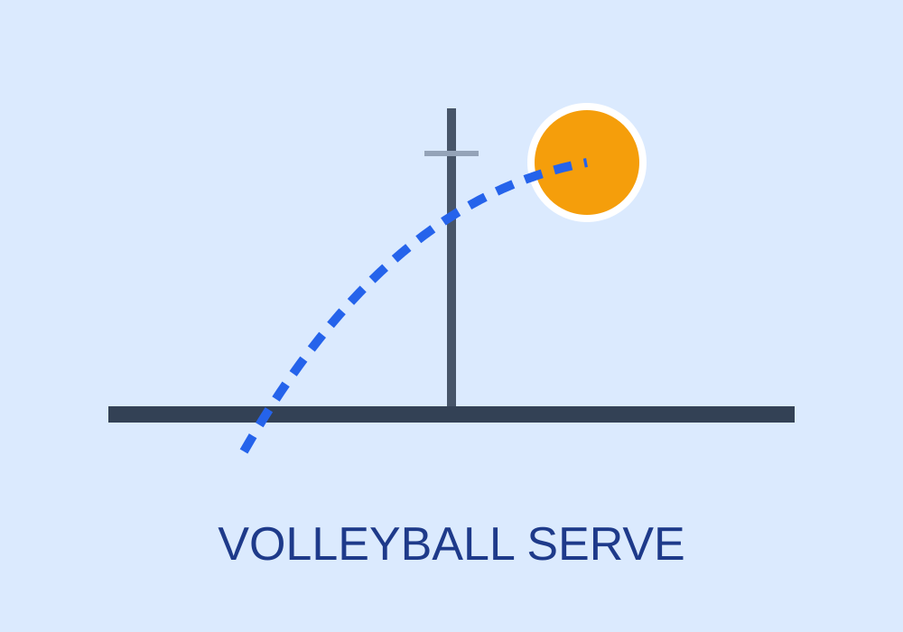

Serving
A tough serve can immediately put the other team in a difficult position.
Final Project Website

Volleyball is built on rhythm and control. Teams must pass, set, and attack in a short amount of time, so every movement matters.
Players also need trust. A strong volleyball team communicates clearly and reacts together during every rally.
A tough serve can immediately put the other team in a difficult position.
Good setting creates better attacks and keeps the offense organized.
Quick reactions and strong positioning are necessary for digs and blocks.